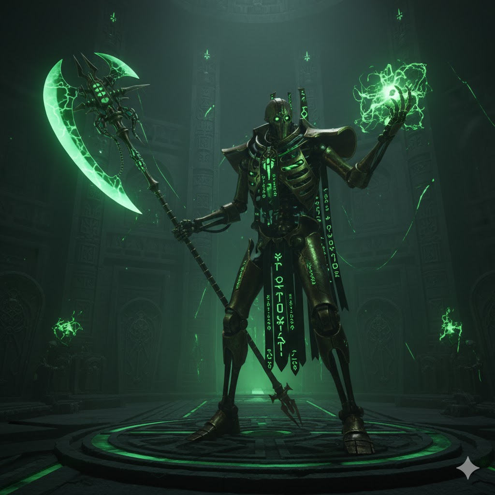

Necrons

O Despertar dos Antigos
Milênios adormecidos sob a crosta de mundos mortos, os Necrons são uma raça de guerreiros imortais de metal, que retornam para tomar de volta a galáxia que um dia foi deles.

Tecnologia Ancestral
Suas armas e naves desafiam as leis da física. Portais de teleporte, raios de energia pura e armaduras que se regeneram fazem dos Necrons uma ameaça quase invencível.
Curiosidades
- Foram seres orgânicos, os Necrontyr, antes de se tornarem máquinas vivas. Agora se Chamam Necrons.
- Sua liderança é formada por Faraós Eternos e Lordes sobre-humanos.
- Dormem em tumbas espalhadas pela galáxia, aguardando o momento certo para retornar.